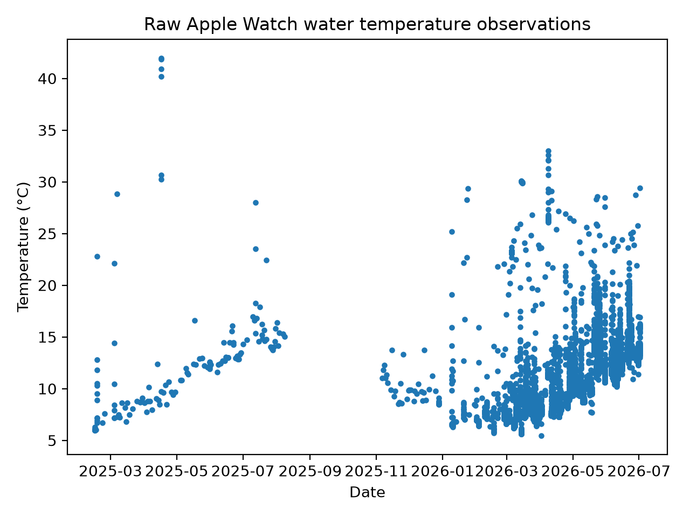
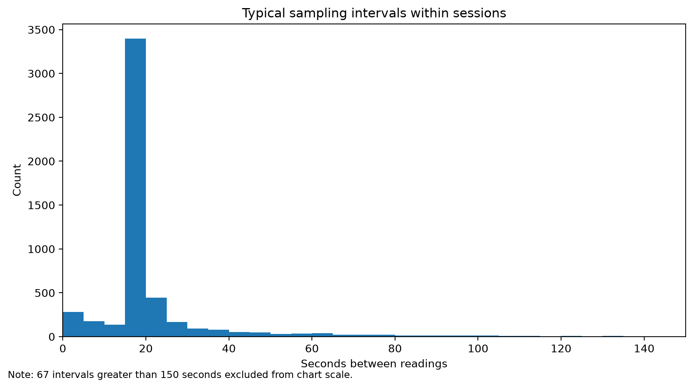
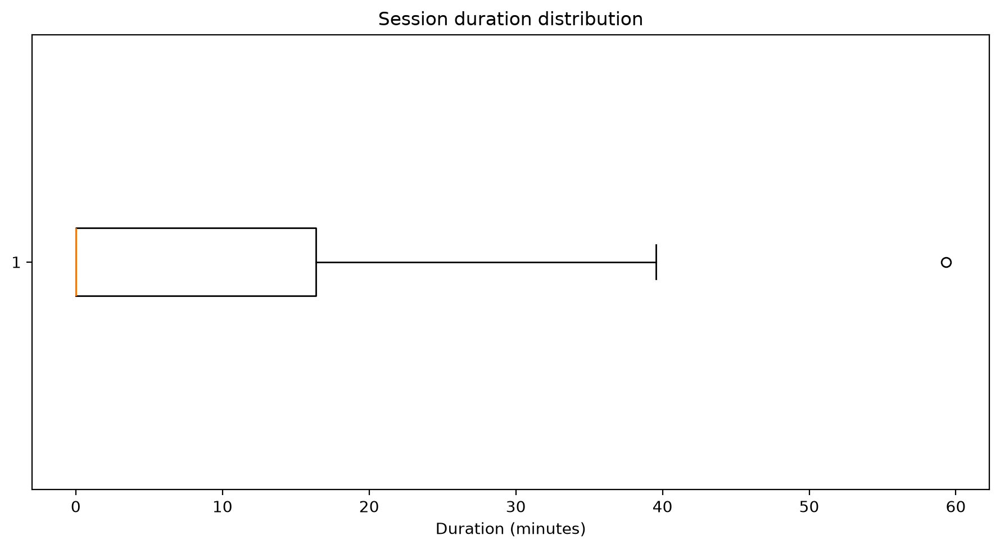
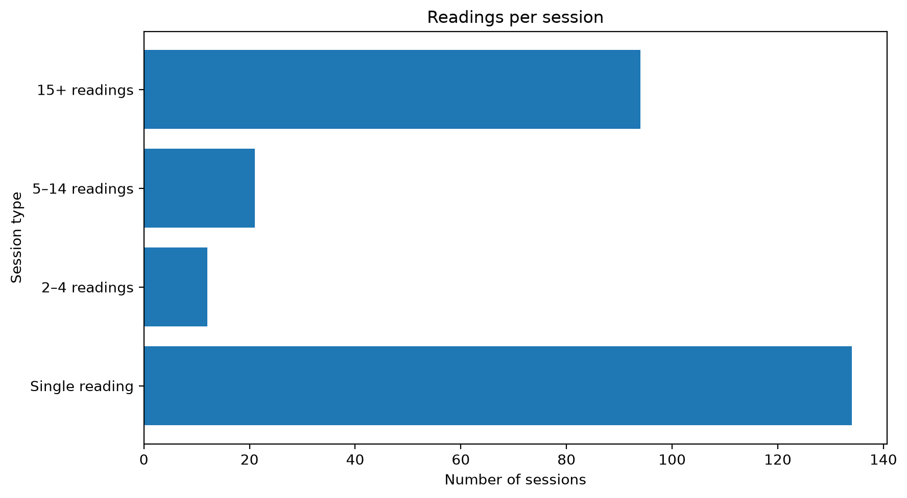
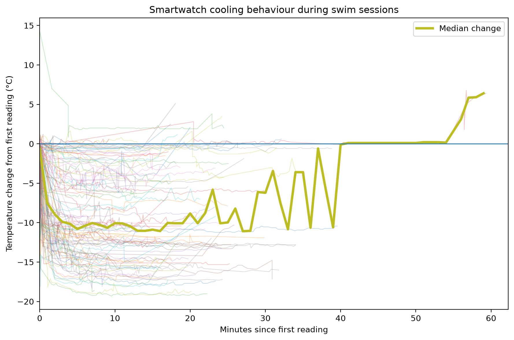
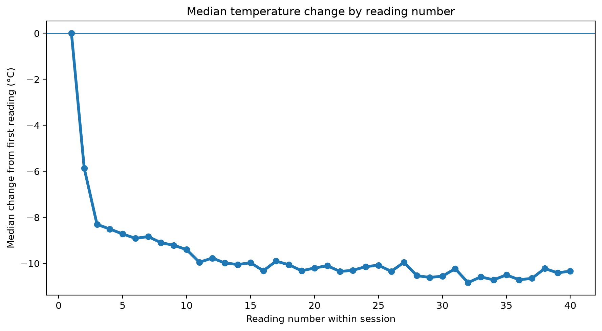
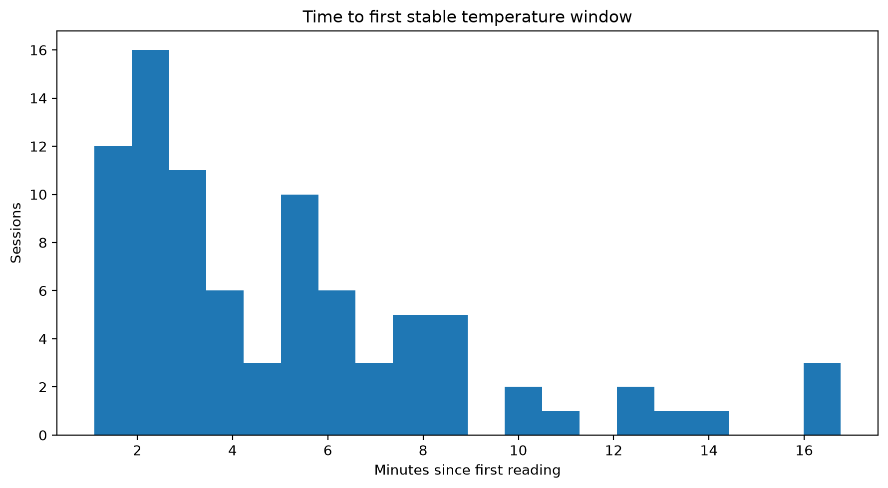
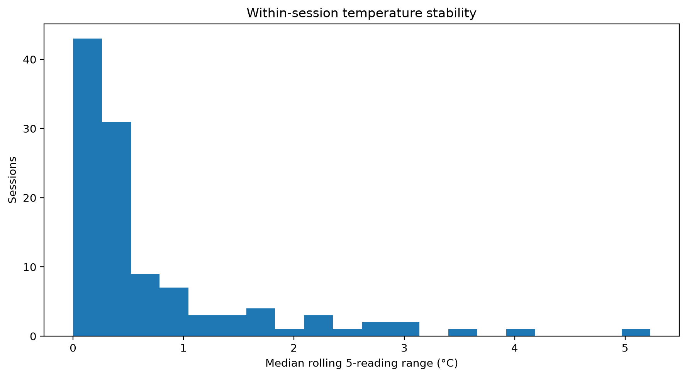

Automatically generated analysis of smartwatch-derived water temperature observations.
Part of the Whitley Bay Multi-Source Sea Temperature Record.
Experimental · Version 0.1
| Metric | Value |
|---|---|
| Raw water temperature observations | 5,487 |
| Observation period | 2025-02-14 to 2026-07-01 |
| Sessions using 30-minute gap rule | 261 |
| Single-observation sessions | 134 |
| Short sessions, 2–4 readings | 12 |
| Continuous sessions, 5+ readings | 115 |
| Finding | Value |
|---|---|
| Average readings per session | 21.0 |
| Readings ≥20°C | 342 (6.2%) |
| Readings ≥25°C | 145 (2.6%) |
Some high values are unlikely to represent open seawater at Whitley Bay and may be affected by body heat, wetsuit coverage, post-swim activity or other non-sea exposure.
| Metric | Value |
|---|---|
| Minimum recorded temperature | 5.46°C |
| Maximum recorded temperature | 41.97°C |
| Readings ≥20°C | 342 |
| Readings ≥25°C | 145 |

| Metric | Value |
|---|---|
| Median sampling interval | 17.0 seconds |
| Within-session intervals | 5,226 |

| Metric | Value |
|---|---|
| Median duration | 0.0 minutes |
| 75th percentile | 16.4 minutes |
| 95th percentile | 27.1 minutes |

Sessions with only one or a small number of readings should be treated differently from continuous swim recordings where a stable temperature plateau can be identified.

The chart below shows longer swim sessions aligned to the first recorded temperature measurement. Each session is normalised so that its first reading starts at 0°C. This shows how the smartwatch sensor changes after entering the water, rather than showing seasonal differences in sea temperature.

The second chart summarises the median temperature change by reading number. This helps assess how many readings are typically needed before the sensor approaches a stable value.

This section uses a provisional rolling 5-reading window to investigate when temperature readings become stable within a swim session. Readings of 20°C or above are excluded before this analysis.
| Metric | Value |
|---|---|
| Sessions analysed for stability | 112 |
| Sessions with provisional stable window | 87 (77.7%) |
| Median time to first stable window | 4.2 minutes |
| 75th percentile time to stability | 6.8 minutes |
| 90th percentile time to stability | 10.0 minutes |
| Median rolling 5-reading range | 0.40°C |
| 75th percentile rolling range | 0.88°C |
| 90th percentile rolling range | 1.98°C |


These values are diagnostic rather than final. Their purpose is to help select evidence-based thresholds for the stable plateau algorithm.
smartwatch_sessions.csv dataset containing one representative temperature per swim session.This report demonstrates that smartwatch water temperature observations are best interpreted as swim sessions rather than independent temperature measurements.
The purpose of this report is to characterise smartwatch behaviour as a water temperature sensor and to provide evidence for a reproducible processing methodology.